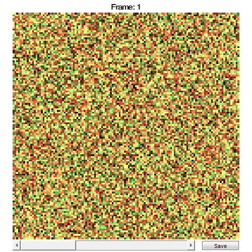
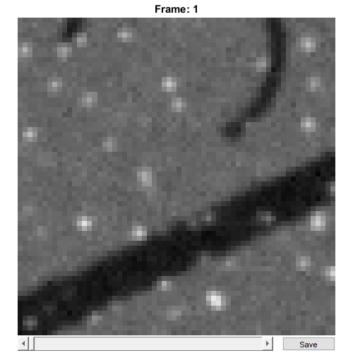

RawImgDummy
Store 'dummy' raw image data
Contents
Usage
OBJ = RawImgDummy(FILENAME, CHS, CAL, ACQ) OBJ = RawImgDummy(NAME, RAWDATA, CHS, CAL, ACQ)
Arguments
- FILENAME is the original filename (including the path) of this RawImgDummy object.
- CHS is a scalar structure that contains information about the meaning of the image channels.
- CAL is a scalar CalibrationPixelSize object.
- ACQ is a scalar structure containing information about the image acquisition (e.g. line time, zoom factor etc).
- NAME is the name of this RawImgDummy object.
- RAWDATA is the raw image data for the RawImgDummy object.
Details
RawImgDummy objects are used to contain all raw image data and metadata from 'dummy' raw image data, i.e. images that don't have a specific class designed to import their format. This makes it possible to create functional RawImg objects from any data without requiring the overhead of creating a class (but also without the benefits of a streamlined creation/import process). RawImgDummy objects are also created when RawImg objects are modified in certain ways (e.g. concatenated together or split up), since the modified objects no longer represent the original raw image file.
See Also
Examples
The following examples require the sample images and other files, which can be downloaded manually, from the University of Zurich website (http://www.pharma.uzh.ch/en/research/functionalimaging/CHIPS.html), or automatically, by running the function utils.download_example_imgs().
Create a RawImgDummy object interactively
The following example will illustrate the process of creating a RawImgDummy object interactively, using already existing image data.
% Call the RawImgDummy constructor with some randomly-generated data rid001 = RawImgDummy('test', rand(128, 128, 2, 4))
Answer some questions about the image acquisition. For example, specify that the image was not bidirectional, that the line time was 2ms, and that the zoom factor was 4.
Please enter a value for if the image is bidirectional [1/0]: 0 Please enter a value for the line time [ms]: 2 Please enter a value for the zoom factor: 4
Use the interactive dialogue box to select the dummy calibration (calibration_dummy.mat), which should be located in the subfolder tests>res, within the CHIPS root directory:

The next stage is to define the 'meaning' of the image channels. For example, specify that the first channel represents a cytosolic calcium sensor expressed in astrocytes, and the second channel represents the blood plasma. Press three and then enter, followed by one and then enter, to complete the selection.
----- What is shown on channel 1? -----
>> 0) <blank>
1) blood_plasma
2) blood_rbcs
3) Ca_Cyto_Astro
4) Ca_Memb_Astro
5) Ca_Neuron
6) cellular_signal
7) FRET_ratioAnswer: 3
----- What is shown on channel 2? -----
>> 0) <blank>
1) blood_plasma
2) blood_rbcs
3) Ca_Cyto_Astro
4) Ca_Memb_Astro
5) Ca_Neuron
6) cellular_signal
7) FRET_ratioAnswer: 1
We have now created a RawImgDummy object interactively.
rid001 =
RawImgDummy with properties:
filename: 'test'
isDenoised: 0
isMotionCorrected: 0
metadata_original: []
name: 'test'
rawdata: [4-D double]
t0: 0
metadata: [1x1 Metadata]Create a RawImgDummy object without any interaction
% Specify the channels relevant for this raw image channels002 = struct('Ca_Cyto_Astro', 1, 'blood_plasma', 2); % Load the CalibrationPixelSize object fnCalibration = fullfile(utils.CHIPS_rootdir, 'tests', 'res', ... 'calibration_dummy.mat'); calibration = CalibrationPixelSize.load(fnCalibration); % Specify some data about the image acquisition nRows002 = 128; nCols002 = 128; acq002 = struct('isBiDi', false, 'lineTime', 2, 'zoom', 4, ... 'nLinesPerFrameOrig', nRows002, 'nPixelsPerLineOrig', nCols002); % Create the RawImgDummy object without any interaction rid002 = RawImgDummy('test RID 002', rand(nRows002, nCols002, 2, 4), ... channels002, calibration, acq002); % View the RawImgDummy object. (Note: your image may differ due to the % random data used to generate it) rid002.plot()
Create a RawImgDummy object from a .tif image
% Specify the full path to the raw image object fnRID003 = fullfile(utils.CHIPS_rootdir, 'tests', 'res', ... 'ArtificialData_SNR_0.1_FOV_250.tif'); % Specify the channels relevant for this raw image channels003 = struct('cellular_signal', 1); % Specify some data about the image acquisition nRows003 = 64; nCols003 = 64; acq003 = struct('isBiDi', false, 'lineTime', 0.5, 'zoom', 2, ... 'nLinesPerFrameOrig', nRows003, 'nPixelsPerLineOrig', nCols003); % Create the RawImgDummy object without any interaction rid003 = RawImgDummy(fnRID003, channels003, calibration, acq003); % View the RawImgDummy object rid003.plot()
Opening ArtificialData_SNR_0.1_FOV_250.tif: 100% [=================]